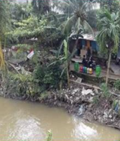
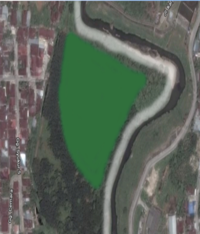
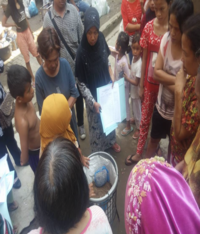
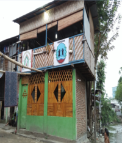

Programs and Innovation
Several programs such as the Sanggar Pendidikan Silaturahmi, Garbage Bank, and others have been carried out, of course many other programs will be carried out in the future.

Research on the river conditions from upstream to downstream of the Deli River Basin
Mapping of empty border areas (buildings that have not yet been built) up to Cultural Heritage Site Research.

Development of Urban Forest Areas.
Making the urban forest area a BWS S II pilot area and conservation training center.

Making TPS and Waste Banks for each neighborhood in the Deli River Basin
Empowering communities by making waste valuable and Inviting the community to be more concerned about the sustainability of the river.

Education Studio for Deli riverbanks Children.
Providing material about the importance of preserving rivers, sorting waste, planting trees. also, making children quick to respond to disasters.